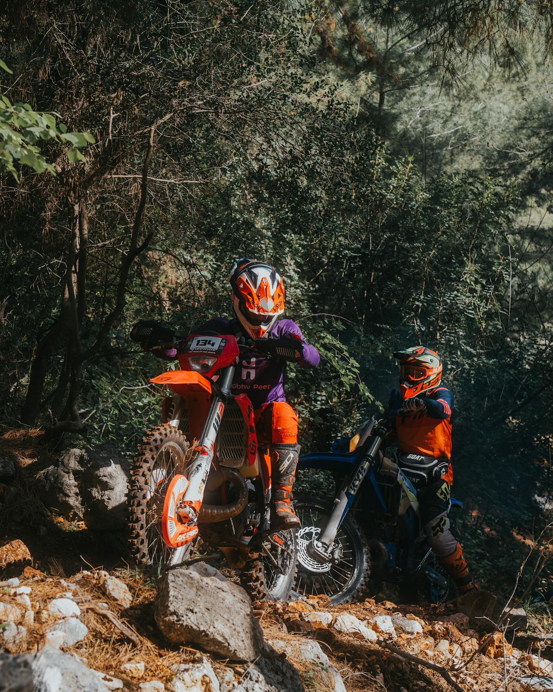
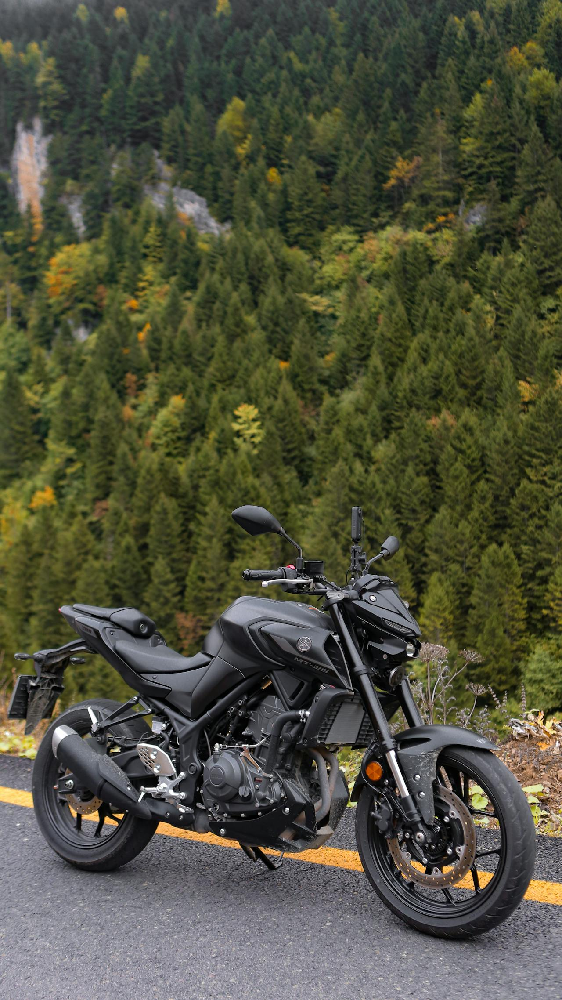
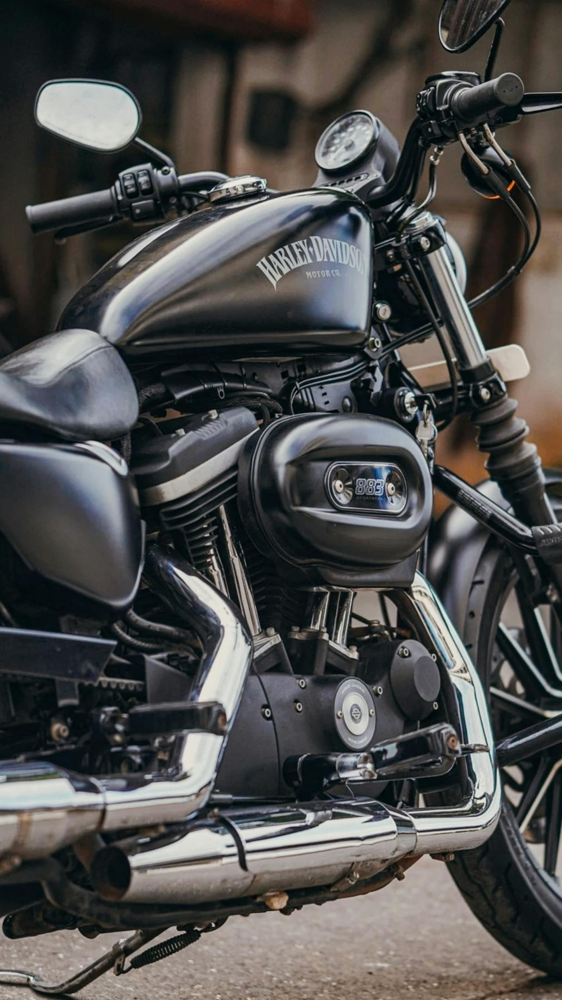
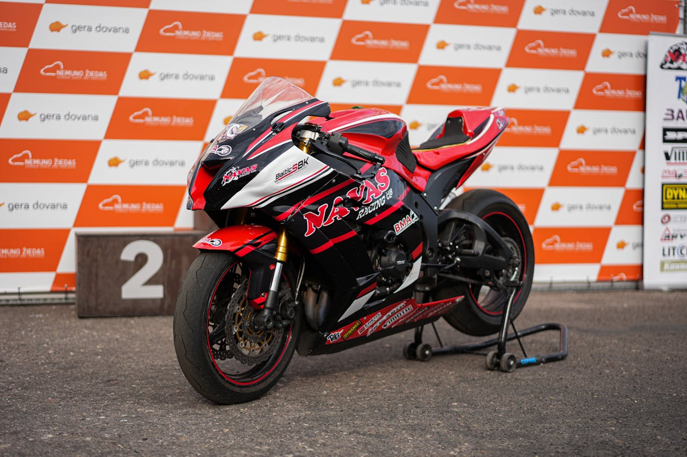
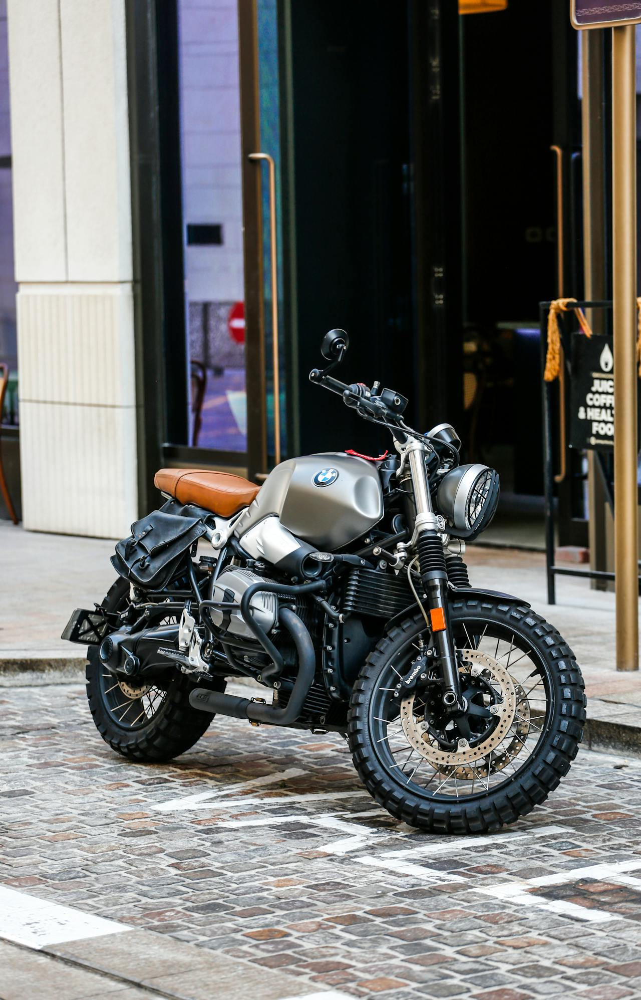

Tek silindirden V4'e, elektrik motoruna kadar motorsiklet motorlarının tüm dünyası.
Farklı silindir düzenlemeleri farklı karakter, ses ve performans sunar.

En basit ve hafif motor konfigürasyonu. Düşük yakıt tüketimi ve kolay bakımıyla enduro ve şehir motorlarında yaygındır.

İki silindirin yan yana dizildiği düzenleme. Pürüzsüz çalışma ve geniş güç bandıyla orta sınıfın favorisi.

İki silindirin V şeklinde yerleştirildiği düzenleme. Harley-Davidson ve Ducati'nin simgesi. Derin sesiyle eşsizdir.

Dört silindirin sıra halinde dizildiği konfigürasyon. Yüksek devirde müthiş güç. Japon süper sporlarda standarttır.

BMW'nin simgesi. İki silindir karşılıklı